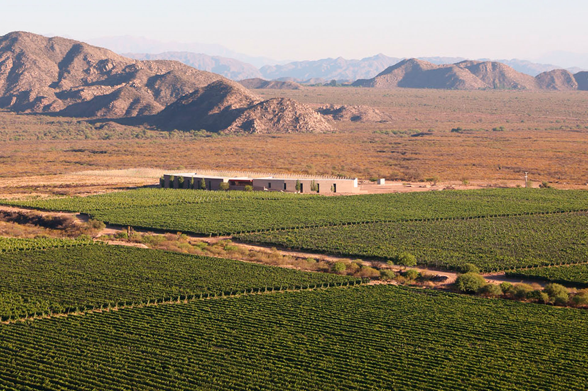
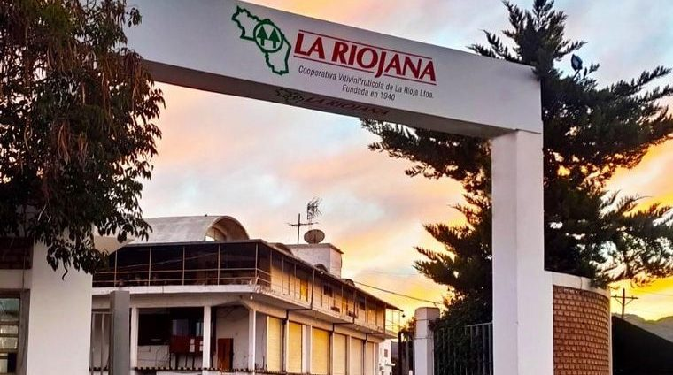
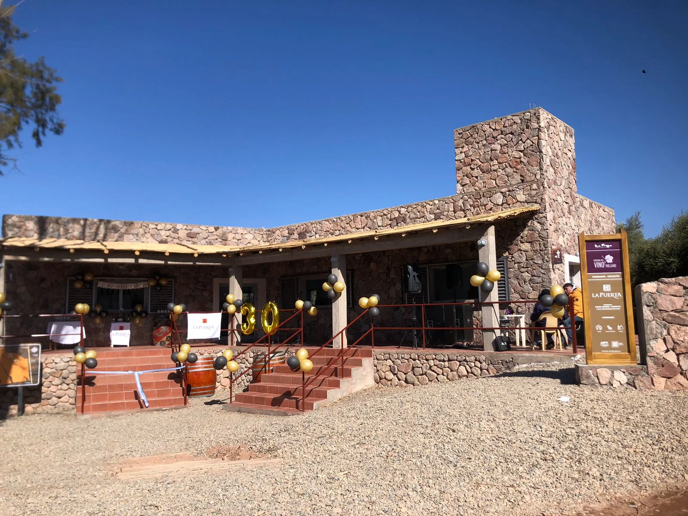
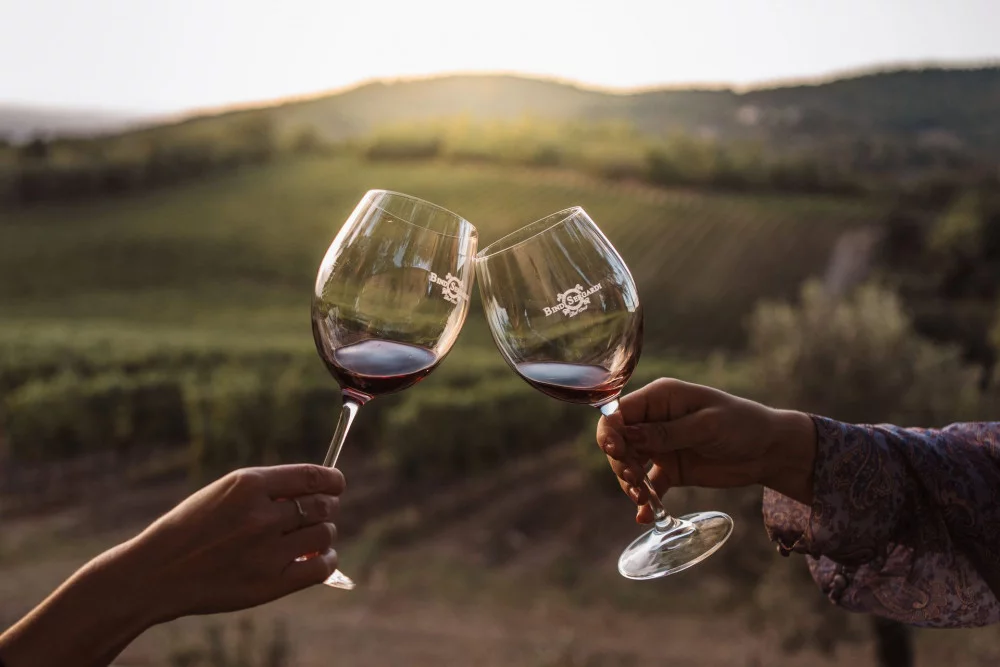
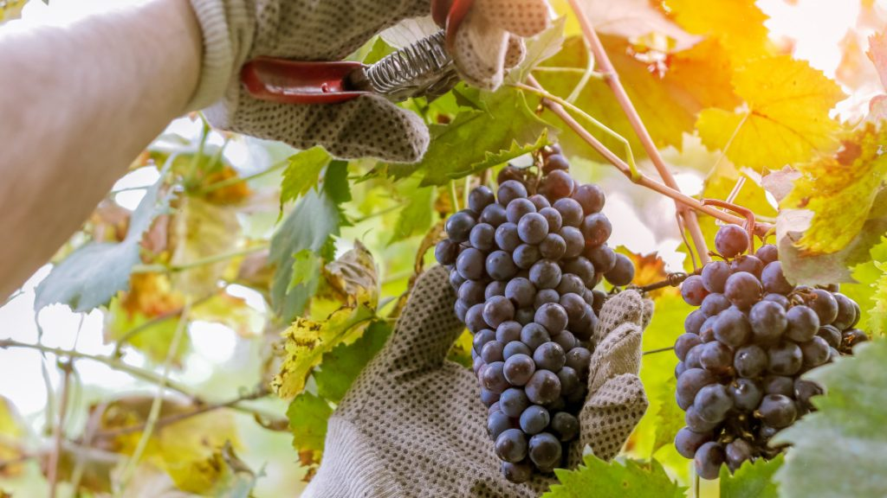

El Valle de Famatina y Chilecito producen algunos de los vinos más puros y elegantes de Argentina gracias a la altitud, amplitud térmica (noches frías y días calurosos) y suelos pedregosos con excelente drenaje. Predomina el Torrontés riojano (aromático, floral, fresco) y el Malbec de altura (intenso, con notas de frutas negras y especias). También destacan Syrah, Bonarda y Cabernet Sauvignon con carácter único.

Viñedos a más de 1.200 metros sobre el nivel del mar
La ruta es corta y accesible: la mayoría de bodegas están a 5-25 km del centro de Chilecito. Se puede hacer en auto propio, remis o tour guiado con degustación incluida.

La más grande y emblemática de la provincia. Visita completa: viñedos, tanques, barricaje y salón de cata. Degustación de 5-6 vinos (Torrontés, Malbec, Cabernet, Syrah). Incluye explicación de la historia cooperativa y exportación. Ideal para grupos grandes. Entrada + degustación ~$5.000-8.000 ARS.

Pequeñas fincas como Chamisa, El Escondido o Finca La Carrodilla. Visitas íntimas (máx. 8-10 personas), recorrido por viñedos a pie, explicación personalizada del enólogo y degustación en medio de las parras o en patios con sombra. Experiencia más auténtica y tranquila. Reserva obligatoria.

Algunas bodegas ofrecen degustaciones privadas al atardecer con vistas a la sierra. Incluye tabla de quesos locales, aceitunas y jamón serrano. Perfecto para parejas o pequeños grupos. Precio ~$10.000-15.000 ARS por persona. Experiencia romántica y fotogénica.

Entre febrero y marzo se puede participar en vendimias artesanales (pisado de uva, cosecha manual). Algunas fincas abren las puertas a turistas para vivir la fiesta de la vendimia con música, asado y vino recién pisado. Experiencia única y limitada en fechas.
Consejo: combina la ruta del vino con almuerzo en bodega o cena en peña para cerrar el día perfecto.